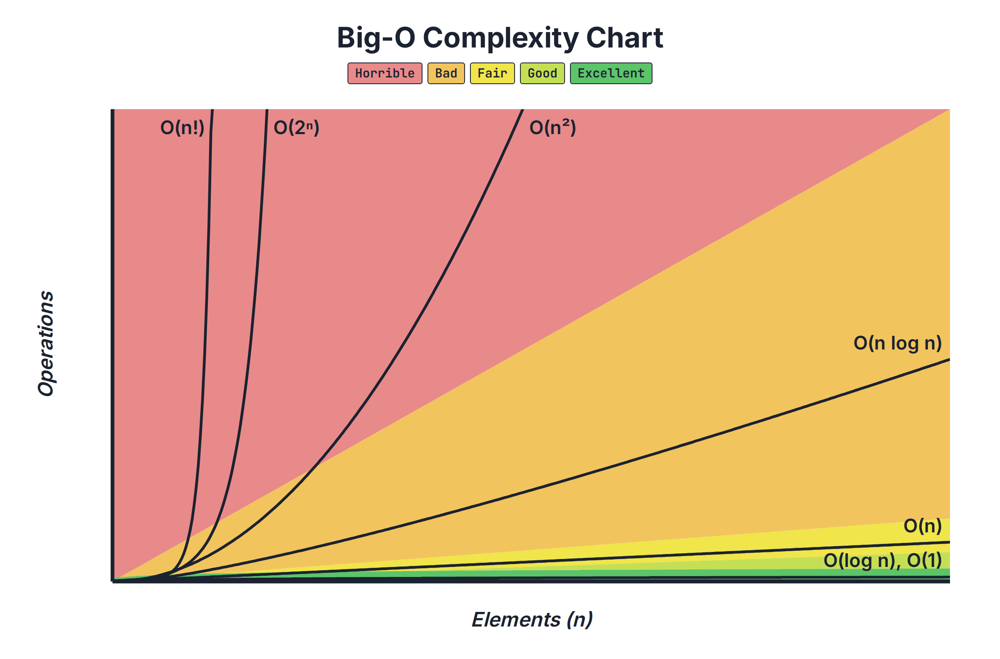

📅 Friday, November 6, 2026
Big-O Notation
Is this code fast enough, and will it still be fast when the data gets big? Big-O is the language for that question. You count the steps of real Python code for 10, 100 and 1,000 items, watch how the numbers grow, and learn to read the growth straight from the loops. Everything opens in a new tab, so keep this page open as your home base.
Understanding Big-O
Time and space complexity, the Big-O chart, counting steps live (O(1), O(n), O(n²), O(log n), O(2ⁿ), O(n!)), four rules for reading code, and space complexity.
Open the slidesArrow keys to move, F for fullscreen- Growth chartThe Big-O chart you can move: pick any n and see how many operations each Big-O needs.
- Code LabEvery file from the lecture, with what real Python prints for each one.
- Activity: Name that Big-OA Python function appears. What is its time Big-O? Bonus: its space?
- Curriculum pageThis lesson on the Code Platoon curriculum site
Cheat sheet
What to look for in the code.
| In the code | Time |
|---|---|
Direct access: items[0], a dict key | O(1) |
| A loop that halves | O(log n) |
| One loop over the input | O(n) |
Good sorting: sorted() | O(n log n) |
| A loop inside a loop, same input | O(n²) |
| Loops over two different inputs | O(n · m) |
| A function that calls itself twice | O(2ⁿ) |
| Every ordering of the items | O(n!) |
Rules: drop the constants (2n → n) · a fixed loop like range(3) is O(1) · loops in a row add, loops inside loops multiply · plan for the worst case.
Homework
In this order, top to bottom (each is a little harder): (1) Algo Big O, (2) Big O Notation (Runestone).
1 · Get the assignment
- Open algo-big-o-i on GitHub and click Fork → Create fork.
- Clone your fork and open it:
VS Code may offer to Reopen in Container. You can skip it: this assignment is reading and writing, no installs.
git clone https://github.com/YOUR-USERNAME/algo-big-o-i.git cd algo-big-o-i code .
2 · Name the Big-O of each snippet
- Read the two articles linked at the top of
README.md, thenexplanations.md: worked examples with the reason for each answer. - In
answers.md, fill in Big O: and Explanation: for every snippet. One sentence is enough: "O(n) because there is one loop over the input." - Check yourself with the four rules: loops in a row add (drop the constant), loops inside loops multiply, a fixed loop is O(1), two different inputs get two letters.
- Not sure? Count it, like in class: add a
stepscounter, run it for 10, 100 and 1,000 items withpython3, and watch how the number grows.If this breaks: a snippet uses a variable it never defines (like
data)? Make a list first,data = list(range(10)), then run it.
3 · Commit and push
- Or ask Claude (in the assignment folder):
git add -A git commit -m "Big-O answers" git pushRun git status and show me the list of files. Then suggest a commit message for my answers and wait for my approval. After I approve, commit and push to my fork.If this breaks: 403 / "Permission denied" on push = you cloned Code Platoon's repo, not your fork.
git remote set-url origin https://github.com/YOUR-USERNAME/algo-big-o-i.git
4 · Big O Notation (Runestone)
- Read Big O Notation and try its self-check questions.
- RunbookBefore class, the codepad keys, per-slide Do/Say, time checks.
- Finished lecture foldergrowth.py, pairs.py, halving.py and branching.py, exactly as they end up in class.
- Python: TimeComplexityThe Big-O of every list, dict and set operation.
- The curriculumData Structures & Algorithms overview, every DS lesson and its assignments.
Diagrams
